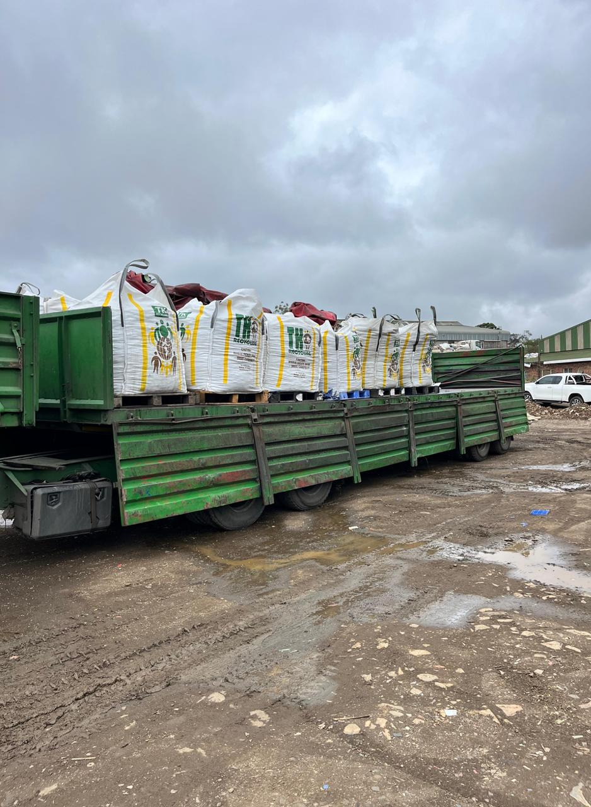
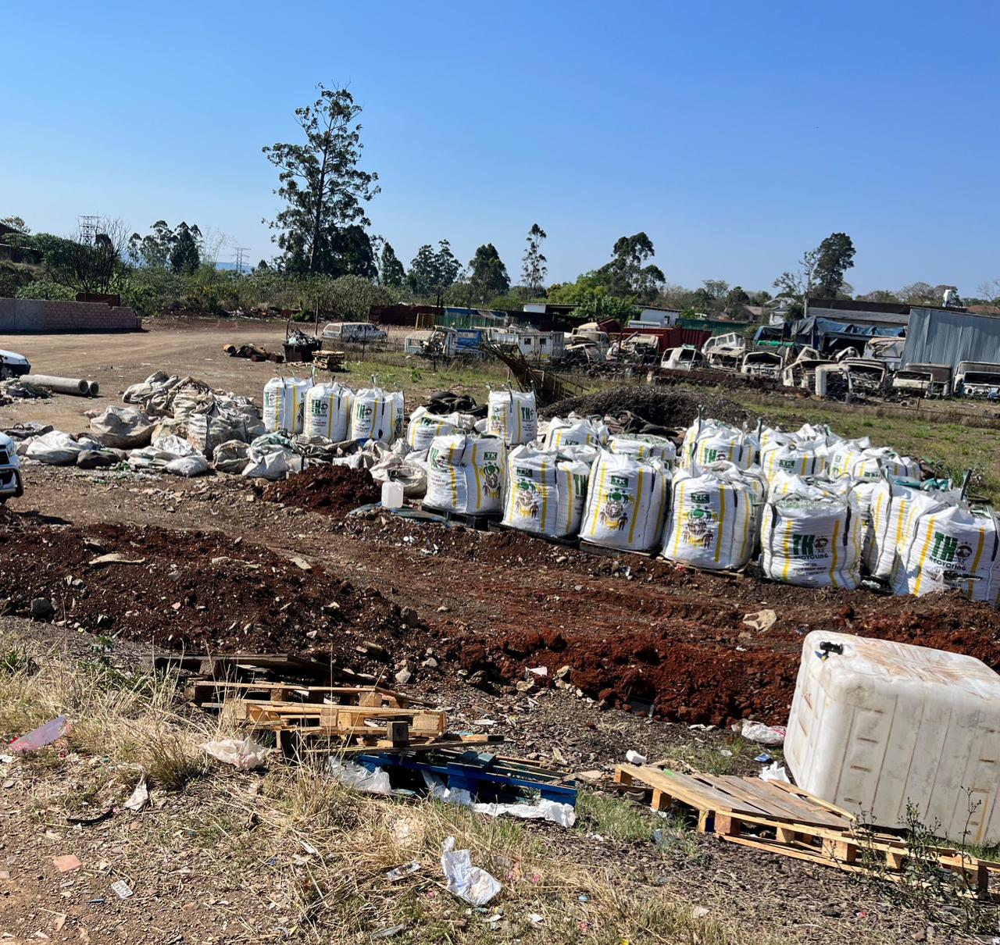
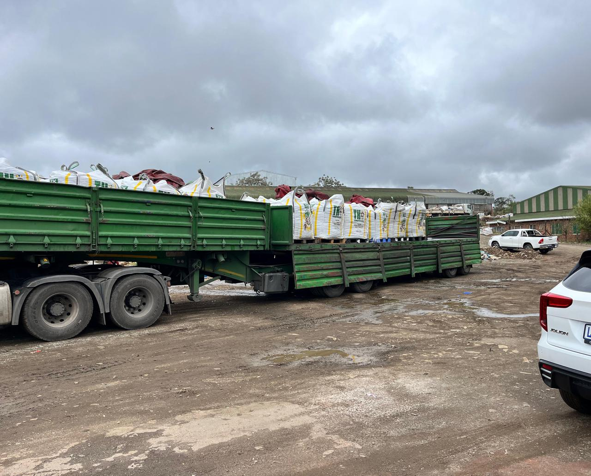
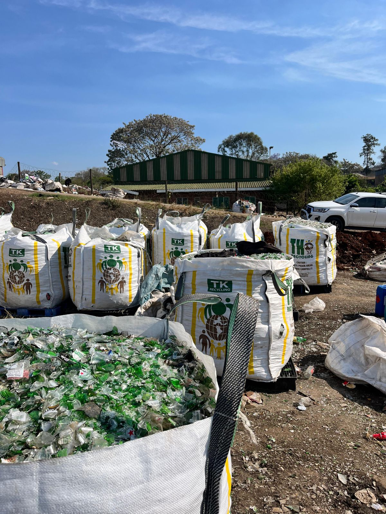

We Buy Glass Bottles & Cullet For Cash
Drop off your glass at our Pietermaritzburg depot for instant payment, or schedule nationwide truck collections (34-tonne load minimum outside PMB).
Reliable Glass Recycling Services
With several depots and collection points, we provide comprehensive glass recycling services built on reliability, fair pricing, and environmental responsibility. Learn more about our services
Competitive Prices
We offer excellent market-related rates for all your recyclable glass, ensuring you receive fair value for your materials.
Reliable Collections
Our fleet provides prompt and efficient collection services for commercial clients across South Africa.
Environmental Focus
By partnering with us, you help build a cleaner, more sustainable environment. We are committed to responsible recycling that reduces landfill waste and supports a greener future.
Glass We Accept
We buy all types of glass bottles and jars — crushed or uncrushed, mixed or sorted. No need to wash or clean them; just bring or deliver your glass as it is, and we'll handle the rest.
Clear Glass (Flint)
- Food & Sauce Jars
- Clear Spirit Bottles
- Beverage & Water Bottles
- Cosmetic Containers
Brown Glass (Amber)
- Beer & Cider Bottles
- Medicine Bottles
- Brown Wine Bottles
- Certain Food Jars
Green Glass (Emerald)
- Wine & Champagne Bottles
- Specialty Beer Bottles
- Sparkling Water Bottles
- Olive Oil Bottles
Blue & Other Colors
- Premium Water Bottles
- Spirit & Liqueur Bottles
- Decorative Glassware
- Perfume & Cologne Bottles
Industries We Serve
We partner with major manufacturing, industrial, packaging, construction, and municipal sectors across South Africa.
Glass Container Manufacturers
Providing high-purity, color-sorted raw cullet to container manufacturers to reduce furnace energy consumption and carbon emissions.
Construction & Eco-Materials
Supplying crushed glass aggregate for sustainable concrete formulations, road base stabilization, and decorative terrazzo surfaces.
Beverage Bottlers & Producers
Managing closed-loop returnable bottle recovery and recycling partnerships for breweries, wineries, distilleries, and soft drink producers.
Municipalities & Waste Operators
Providing structured waste diversion partnerships, regional collection networks, and reliable commercial glass off-take solutions.
Our Simple Process
We make glass recycling easy and transparent in three simple steps.
1. Drop-Off or Collect
Bring your glass to our depot in Mkondeni or contact us to schedule a convenient collection for larger quantities.
2. Weigh & Sort
Our team will accurately sort your glass and weigh it on our certified scales to ensure transparency and trust.
3. Instant Payment
Receive immediate cash or EFT payment for your recyclables based on current market rates. Fast, fair, and hassle-free. Check our bottle recycling prices.
Amabongo Solutions - Our Work in Action
Explore how Amabongo Solutions leads sustainable glass recycling in Pietermaritzburg and across KZN, driving a cleaner environment for our communities.




Get In Touch
Ready to recycle? Visit our yard, give us a call, or send an enquiry. We are ready to assist with all your glass recycling needs.
Email Us
Our Address
72 C B Downes Rd, Mkondeni,
Pietermaritzburg, 3201
Business Hours
Mon-Fri: 08:00 - 16:30
Sat: 08:00 - 15:00
Sun: Closed
Frequently Asked Questions
What are the current bottle recycling prices?
As of June 2026, our glass recycling prices are: R0.60 per kg for crushed glass and R0.50 per kg for uncrushed bottles. Prices may fluctuate based on market demand, sorting (colors), and volume. Contact us for bulk rates per ton. More on the pricing page.
Do you buy crushed bottles?
Yes, we accept both whole bottles and crushed glass (cullet). In fact, crushed glass currently earns a higher rate due to easier processing. We accept clear, brown, and green glass.
Do you collect glass, and what are the requirements?
Yes, we collect! For large commercial volumes, we collect using our trucks, which requires a minimum load of 34 tonnes (we highly recommend crushing your glass for truck collections to maximize capacity and payout). For smaller volumes, we can collect bagged glass using our bakkies depending on your location. Self-delivery of any amount (crushed or uncrushed) is always welcome at our depot.